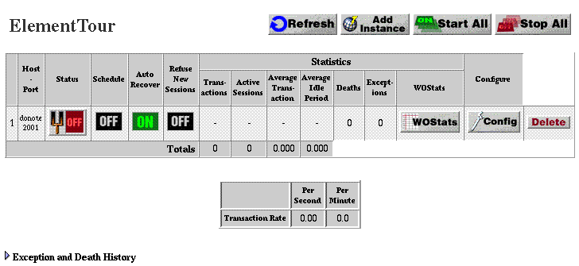

Table of Contents
Table of Contents  Next Section
Table of Contents
Next Section
Table of Contents  Previous Section
Previous Section

The button that looks like a power switch reports the current state of your instance: ON or OFF. The rest of the table reports other information about your instance (for more details see "Obtaining Information From Monitor" on ).
The Detail View page is refreshed and the power switch appears in an animated toggle state, signifying that Monitor is trying to start your instance.
Monitor will refresh the Detail View page and with success your instance will be running and the power switch will be on.
If after completing the startup procedure, the instance's power switch is off, it might be due to one of the following reasons:
Table of Contents Next Section